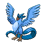

Назад
Артикуно
Артикуно — легендарный Покемон первого поколения под номером 144 в Покедекс. Обитает он в регионе Канто и относится к Ледяному и Летающему типу. Артикуно не эволюционирует. Артикуно — легендарный Покемон, контролирующий стихию льда. От взмахов его крыльев охлаждается воздух. Поэтому говорят, что если этот Покемон летает, то начнётся снегопад.
Тип:
Ледяной
Летающий
Эволюция

# 144 Артикуно